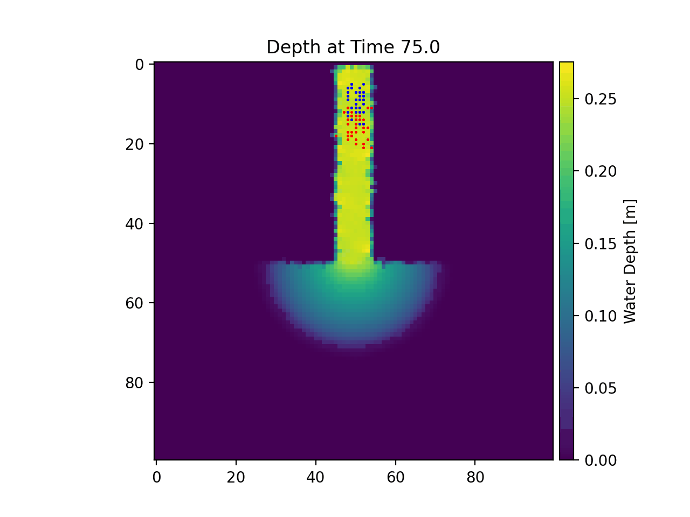

Example 12 - Unsteady Flow Fields¶
In this example we will revisit the ANUGA model domain we looked at in Example 01 — Infiltration into Sandy Soil (Dirichlet head). This time, however, we will be routing our particles in an unsteady flow field, using the data contained in the examples/example_data subdirectory.
Note
This example must be run from the “examples” directory.
Full example script available here.
First we have to load our modules and define the parameter items that are related to the cell size and the particle attributes (number, initial location).
Now that the basic parameters have been established, we will apply the unsteady_plots() function to perform particle routing over unsteady flow data. The target travel time per timestep is set as 75 seconds.
If you run the example, data and figures will be placed in a subdirectory called unsteady_output. Below, there is an animation of the particles moving on the varying flow field. We can see that when the flow is inverted, our ‘tide’ pushes the particles back towards the inlet channel.
